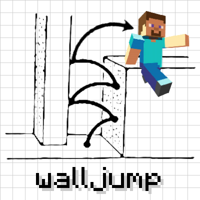
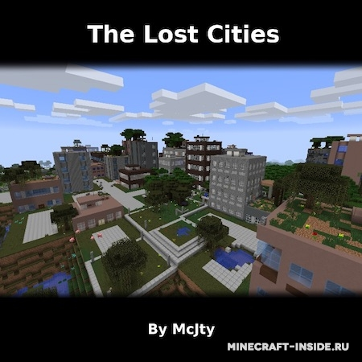
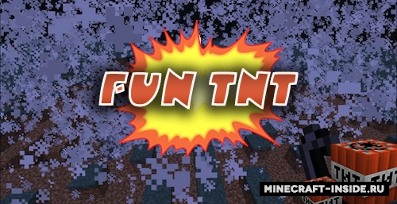
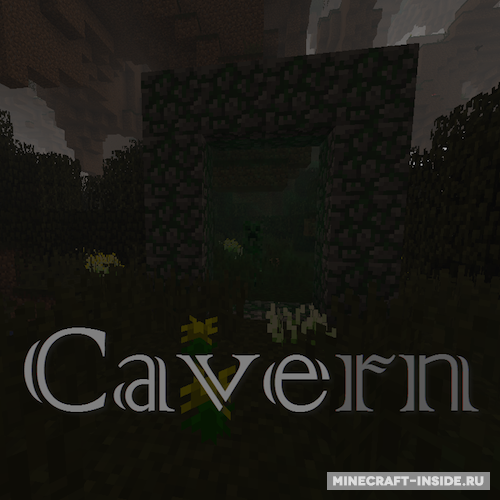
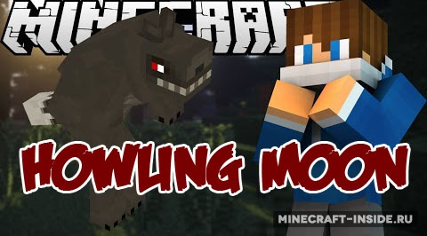
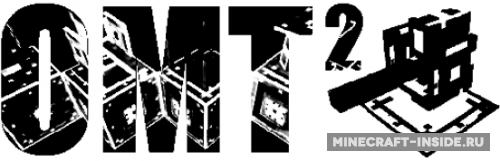
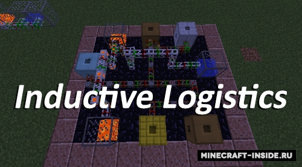

Модификация позволит вам забираться по стенам и цепляться за них, используя клавишу Shift. Также, вы сможете настроить ряд параметров: высота прыжка по стене, клавиша для его применения, скорость бега, минимальная высота для получения урона.

В майнкрафт появится новый генератор мира "Lost Cities", он будет генерировать мир, полностью состоящий из заброшенных городов с разрушенными зданиями.

Модификация добавит новые блоки динамита, которые будут в 2, 8, 64, 128 раза мощнее стандартного аналога, а также будет введена особо сильная ядерная боеголовка. Постарайтесь не подорвать себя и своих друзей во время игры с такими опасными блоками ;)

Cavern является продолжением мода Caveworld 2, в новой реинкарнации этого мода вам будет доступно три вида пещерных измерений, в которых вы сможете попытать счастье в поисках различных руд.Для создания портала в новые измерения используйте замшелый будильник, для активации воспользуйтесь Изумрудом (Измерение Cavern), Аквамарином (Измерение Aqua Cavern) или Саженцом (Измерение Caveland).

Мод даст вам вам возможность стать самым настоящим оборотнем. Для этого вам всего-то нужно быть хоть раз атакованным новым мобом - альфа волком.

Благодаря этой отличной модификации вы сможете создавать модульные турели для охраны своей территории от непрошеных игроков и мобов.
